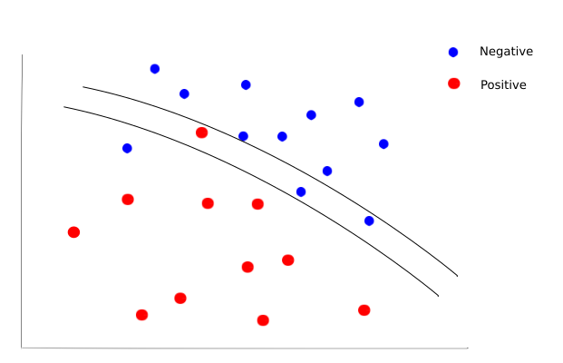
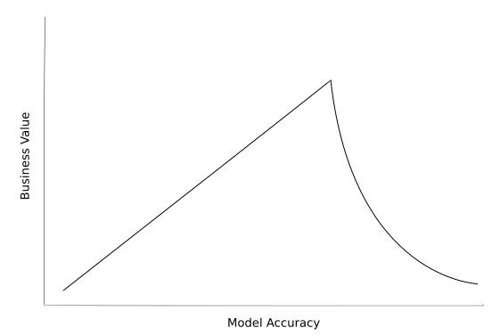

.png)
Photo by Neonbrand on Unsplash
As data scientists we pride ourselves on the accuracy of our machine learning models to predict the future, striving for increasingly accurate results that make our predictions appear like voodoo to the uninitiated. As the progression of machine learning and deep learning has brought more dependency on data science methods for businesses to operate successfully and with the advent of data science competition platforms like Kaggle, the accuracy of our models is often under the spotlight. At the same time, many 3rd party outfits - selling their ML products into businesses looking to buy in technology - will champion the accuracy of their models and how they can quantify the superiority of their product.
Given this, you can easily be forgiven for developing evaluation metric tunnel vision. Thinking that your worth as a data scientist can only be truly seen through the lens of RMSE or AUC, that accuracy is not just a method of determining model performance but of validating you as a data scientist. This is especially prevalent with beginners in the field but is also a behaviour we see in more experienced practioners.
The evaluation metric, while important should only ever be part of the story when we evaluate our machine learning models. We can often get lost in the data and forget the true purpose of our models, losing sight of where the true value resides. Let’s look at some examples where focussing solely on model accuracy would be sub-optimal.
As we know, many of our models are probabilistic, we will get some predictions correct and some incorrect but the net benefit should obviously be positive. The value when we are correct exceeds the losses when we are wrong.
However, imagine the case where we are building a model to predict whether a patient would test positive for some disease based on data gathered about the person. The outcome of the model will determine whether a patient is sent for further tests to confirm diagnosis. In the chart below the two curved lines represent the decision boundaries found by two models trained on two independent features with each patient in a test set plotted and coloured according to whether they actually have the disease (positive) or not (negative).
The bottom line is clearly the most accurate, misclassifying only two patients against the four misclassifications of the model represented by the top line. However, in this instance by using the more accurate model we would have ignored a patient with potentially severe consequences.
In this scenario it is better to predict more false positives; classifying more patients as having the disease and pulling some extra patients aside for further testing rather than risking patients with the disease slipping through the net. For classification problems, we can of course use the recall rate rather than the accuracy to better judge the success of our model. This is a classic example of thinking about the actual problem that’s being worked on and not just about the data and the evaluation metric.
If we think of a data scientist as an asset in a business then by business principles the value margin we bring to the business is the value minus the cost to have us be part of the business. On a project-by-project basis this cost is largely determined by how long it takes us to complete our work. Now this doesn’t mean we should necessarily think of ourselves as a model production line, churning them out as fast as we can, using the same cookie cutter methods. It does however; mean thinking more about the problem we are tackling and in particular, whether business value is positively correlated to model accuracy and at what point this stops being the case. From this we can determine what level of accuracy will bring us all or most of the value we seek from the model given the business context, beyond which the value is diminished or non-existent.
Let’s take an example of using machine learning to predict demand for products in a retail business. By being able to predict demand accurately we should be able to use the model to optimise inventory levels. In this scenario, it may on the face of it seem like we should spend as much time as we can fine tuning to get the model to predict as close to the precise number of units that will be demanded as possible. In reality however, most retail businesses buy products in job lots (for example packs of 10). Therefore there is limited benefit in pursuing increased accuracy beyond the point where the prediction would change the decision the business makes. In this case, if we managed a 1 or 2 mean absolute error in unit prediction we would only get a small amount of benefit in developing our model further to reduce this error as it would not often change the number of packs the business actually purchases.
If this problem was part of a Kaggle competition it would obviously be important to spend days engineering and testing additional features or tuning hyper parameters but in a commercial context this would give us only small incremental business value and would actually involve us spending a lot more time in development. This would mean more time before the business can take advantage of the model, other projects being subsequently delayed and our value margin to the business being reduced. Therefore being satisfied with a less accurate model ultimately results in an increase in business value generated over time.
Finally, consider the scenario where we are tasked with building a machine learning model for an ecommerce website that is used to feed customers recommendations for additional products to purchase. There could be many features that would help to increase the accuracy in the model including historical purchase data, browsing information, demographics etc. However, if we create a model with a large amount of features with many calculations involved to engineer, we risk outputs taking so long to generate that customers have moved on before recommendations have even been loaded on the website.
This is the scenario for many machine learning models that are built into products such as apps and websites. This occurs when a business is trying to either influence some sort of behaviour like a recommendation system or when users are actually interacting with the model directly, attempting to get some result or output based on information they provide. In both cases, if the predication or output isn’t fast enough we risk losing user engagement or miss an opportunity to influence behaviour. It doesn’t matter how good the model is if the customer isn’t around to see the result.
As we have seen, while data science competitions and sales pitches place huge emphasis on model accuracy, evaluating a machine learning model in the real world should be much more nuanced and particular to the problem being worked on. As data scientists, we can all get caught up in metric tunnel vision but as part of the research, checks, balances and testing we do as part of machine learning projects, it’s also important to understand and remember the real reason the model is being built in the first place and evaluate accordingly.